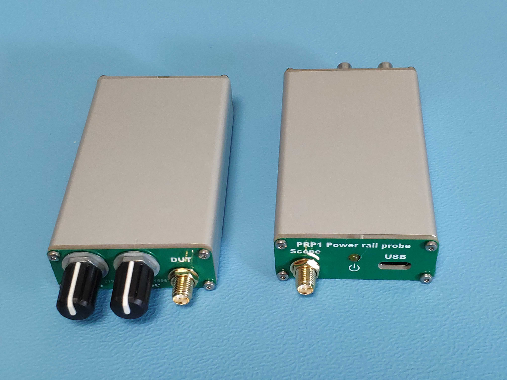
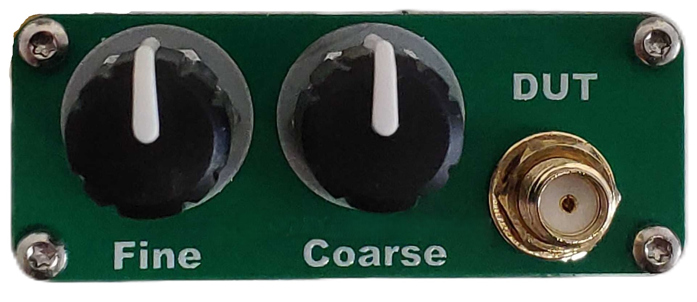
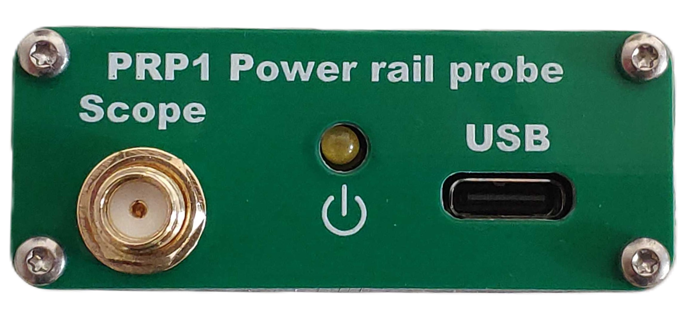
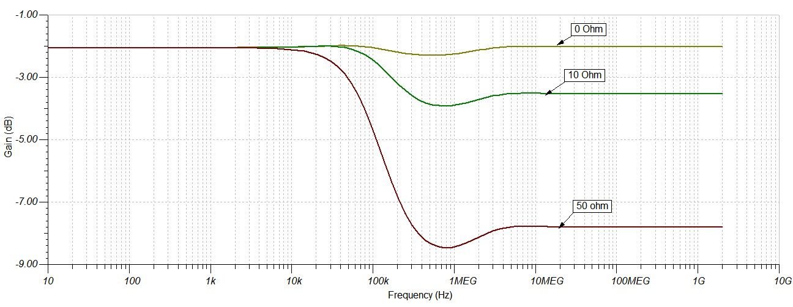
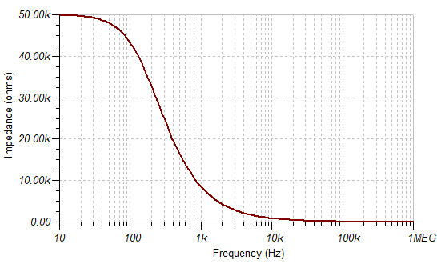
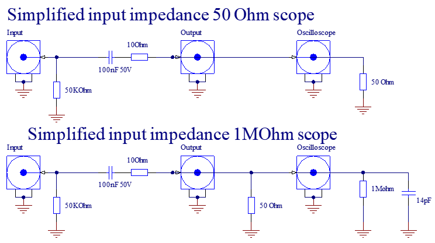

Power rail probes are used to measure the noise, ripple, loop response and other characteristics of power supplies.
These are not standard oscilloscope probes and cannot be used the same way. Proper probing technique is nessesary for best performance.
It's recommended to probe the power supplies with regular oscilloscope probe first in 1MOhm mode, and 1:1 or 1:10 attenuation.
Power rail probes can be used after the general voltage levels have been verified. Their benefits is low intrinsic noise, and low noise pickup due to their construction.
For best noise performance the 50Ohm input path of the oscilloscope is used. The 50Ohm inputs on oscilloscopes have a maximum input voltage rating that's typically 5V. Additionally their DC input resistance is also 50 Ohm. This DC loadingoften times changes the behavior of the DUT. For example a power supply might change from pulse skipping mode to PWM mode after the probe is connected.
Power rail probes provide 50KOhm DC ressitance, and 50 Ohm AC impedance, therfore there is minimal loading on the DUT, while the high frequency content of the DUT's noise is also preserved. Power rail probes also limit the DC content to a few hundred milliovolts, therefore the

Please be advised about these warnings when operting the PRP1

DUT: Connect this to the device under test. Maximum voltage of the connection is 24V. The couter conductor of the SMA connector is referenced to the Earth connection of the oscilloscope and must be connected to the ground connection to the device under test. Ground loops, may introduce noise to the system.
Coarse: Potentimeter to adjust the offset voltage. The typical adjustment range of this potentiometer is +24V to -24V.
Fine: Potentimeter to adjust the offset voltage. The typical adjustment range of this potentiometer is +500mV to -500mV.

USB: Connect this to a 5V powered USB port. The shileding and ground of the USB port is shared with the oscilloscope, and shouldn't be connected to other voltages. I recommend powering it with a floating power supply or use the front panel USB port of the oscilloscope.
Power LED: Yellow LED to indicate that the USB is connected and the PRP1 is powered.
Scope: This is the output of the PRP1. Use a SMA to BNC cable to connect it to your oscilloscope. The maximum DC output voltage of the PRP1 is limited to 2.5V, and with 50 Ohm termination, the typical output range is 500mV.
Follow these steps to setup a new measurement with the PRP1
Proper probing is essential for best performance of using the PRP1. The input of the PRP1 should be short, 50Ohm characteristic impedance, and low DC resistance. Do not use standard oscilloscope probes on the input. They have series resistors in the probe and lossy coax cable. The voltage readings will not be correct. The following probing methods provide the best performance (highest bandwidt) in most applications:
Do not place a resitor series with the probe. The high speed gain will be reduced, according to the following:

Do not use standard oscilloscope probes with the PRP1.
The PRP1 has 50 KOhm DC resistance, and 50 Ohm AC impedance. The input impedance is simlated with the following curve:

The equivalent circuit of the probe is the following:

As you can see oscilloscopes with 50 Ohm path provide the best performance. The 50 Ohm BNC termination resistors used with 1MOhm oscilloscopes will limit the bandwidth of the PRP1 probe, depending on their quality. My estimated bandwidth with the popular and cheap P57 termination resistors is about 200MHz.
The capacitive loading of the PRP1 is estimated as 0.5pF, based on the system bandwidth.
It's important that the PRP1 only provides 50 KOhm loading, if it's properly zero'd out on the oscilloscope. Without zeroing out it will inject a small current into the DUT. The voltage it can generate is limited to about 1V, and the source impedance of this current is 50 KOhm. For voltage sensitive circuits this should be considered before connecting the PRP1.